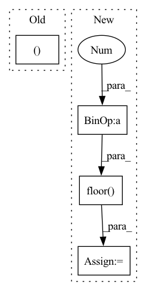

Pattern ID :10654
Before Change
for riind in range(griddat.shape[1]):
griddat[bind, riind].index_put_(
tuple(arr_ind.unsqueeze(0)),
tmp[bind, riind ],
accumulate=True
)
else:After Change
centers = tf.cast(tf.floor(numpoints * L / 2), int_type)
// offset from k-space to first coef loc
kofflist = 1 + \
tf.cast(tf.floor( tm - numpoints[:, None] / 2.0 ) , int_type)
// initialize output array
griddat = tf.zeros(In pattern: SUPERPATTERN
Frequency: 3
Non-data size: 4
Instances Fragment ID: 36882050
Project Name: zaccharieramzi/tfkbnufft
Commit Name: e1123a8893ee7aeee9593a67d2151f8d860f384a
Time: 2020-03-01
Author: zaccharie.ramzi@gmail.com
File Name: tfkbnufft/nufft/interp_functions.py
M Class Name: AnonimousClass
N Class Name: AnonimousClass
M Method Name: run_interp_back(3)
N Method Name: run_interp_back(3)
M Parent Class:
N Parent Class:
M File Name: tfkbnufft/nufft/interp_functions.py
N File Name: tfkbnufft/nufft/interp_functions.py
M Start Line: 160
M End Line: 205
N Start Line: 161
N End Line: 190
Before Change
off_x = self.res * ((1. * logit(tensor[66 + i][y, x])) - 0.0)
off_y = self.res * ((1. * logit(tensor[66 * 2 + i][y, x])) - 0.0)
else:
off_x = self.res * ((2. * float(tensor[66 + i][y, x ])) - 1.0)
off_y = self.res * ((2. * float(tensor[66 * 2 + i][y, x])) - 1.0)
lm_x = crop_y1 + scale_y * (self.res * (float(x) / 28.) + off_x)
lm_y = crop_x1 + scale_x * (self.res * (float(y) / 28.) + off_y)After Change
off_x = self.res * ((1. * logit(tensor[66 + i][x, y])) - 0.0)
off_y = self.res * ((1. * logit(tensor[66 * 2 + i][x, y])) - 0.0)
off_x = math.floor(off_x + 0.5)
off_y = math.floor( off_y + 0.5 )
lm_x = crop_y1 + scale_y * (self.res * (float(x) / 28.) + off_x)
lm_y = crop_x1 + scale_x * (self.res * (float(y) / 28.) + off_y)
lms.append((lm_x,lm_y,conf))
avg_conf = avg_conf / 66. Fragment ID: 36882051
Project Name: emilianavt/openseeface
Commit Name: dda7dd05198a135fc1e5f6815e51c8f2d50ec8f5
Time: 2020-01-26
Author: 38952746+emilianavt@users.noreply.github.com
File Name: tracker.py
M Class Name: Tracker
N Class Name: Tracker
M Method Name: landmarks(3)
N Method Name: landmarks(3)
M Parent Class:
N Parent Class:
M File Name: tracker.py
N File Name: tracker.py
M Start Line: 253
M End Line: 276
N Start Line: 256
N End Line: 263
Before Change
train_samples = np.bitwise_or(train_samples, np.bitwise_not(test_samples))
// splitting samples with no objects
x_no_objects_train, x_no_objects_test, y_no_objects_train, y_no_objects_test = train_test_split(x_no_objects,
y_no_objects,
test_size=test_size)
After Change
test_samples = np.zeros((y.shape[0]), dtype=np.bool8)
train_samples = np.zeros((y.shape[0]), dtype=np.bool8)
class_sample_counts = y.sum(axis=0)
ideal_train_size = np.floor( sum(class_sample_counts) * (1 - test_size))
// stratify starts from a class with the lowest number of samples
class_indices = np.argsort(class_sample_counts)
for class_index in class_indices: Fragment ID: 36882048
Project Name: pooya-mohammadi/deep_utils
Commit Name: aa4e63d588b19aeac99c6d8e17ddee1c8c650da0
Time: 2022-06-08
Author: pooyamohammadikazaj@gmail.com
File Name: deep_utils/utils/multi_label_utils/stratify/stratify_train_test_split.py
M Class Name: AnonimousClass
N Class Name: AnonimousClass
M Method Name: stratify_train_test_split_multi_label(4)
N Method Name: stratify_train_test_split_multi_label(4)
M Parent Class:
N Parent Class:
M File Name: deep_utils/utils/multi_label_utils/stratify/stratify_train_test_split.py
N File Name: deep_utils/utils/multi_label_utils/stratify/stratify_train_test_split.py
M Start Line: 37
M End Line: 90
N Start Line: 59
N End Line: 124